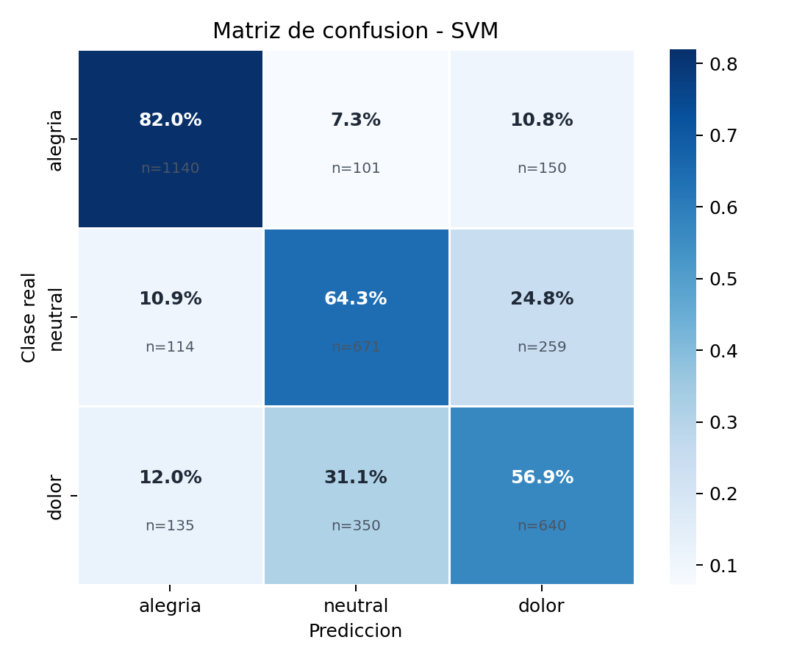
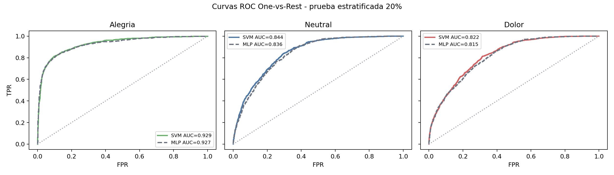
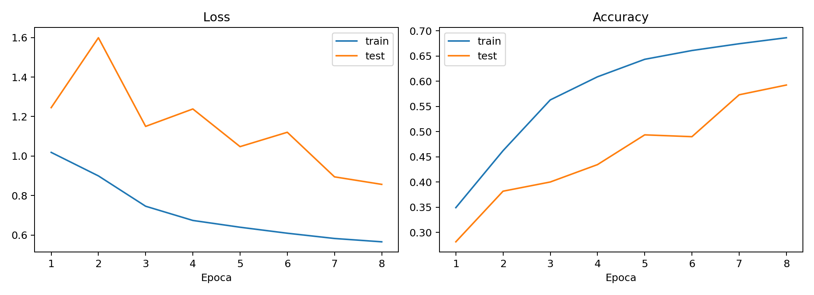

Problema
La paralisis cerebral puede limitar la comunicacion verbal y dificultar que el cuidador identifique dolor, calma o bienestar.
Poster de tesis | Jose Antonio Benavides Ortega
Esta pagina acompana la presentacion del poster y el avance de investigacion al 80%. Explica, con mas espacio, como un prototipo de Reconocimiento de Expresiones Faciales puede traducir estados como calma, alegria o dolor en pictogramas y mensajes de voz.
Material de exposicion
El poster resume el analisis de viabilidad: usar vision artificial como base tecnica para una herramienta de Comunicacion Aumentativa y Alternativa en personas con paralisis cerebral.
Durante la presentacion, esta pagina funciona como segunda capa: muestra el flujo completo, amplia la metodologia y deja visibles las metricas que en el poster aparecen de forma compacta.
Documento base
El avance formal desarrolla el proyecto como Vision Artificial y Registro Multimodal para Comunicacion y Rehabilitacion en Personas con Paralisis Cerebral. Esta pagina toma ese documento como base y lo convierte en una explicacion navegable.
La pregunta central es si resulta viable un sistema FER en tiempo real, ejecutable en hardware de consumo, con landmarks de MediaPipe y clasificadores ligeros entrenados con datasets publicos aumentados.
Guia rapida
La paralisis cerebral puede limitar la comunicacion verbal y dificultar que el cuidador identifique dolor, calma o bienestar.
Usar una webcam, MediaPipe y modelos ligeros para reconocer expresiones faciales y convertir el estado detectado en pictogramas o voz.
El prototipo responde en menos de 34 ms y no requiere GPU dedicada para la inferencia.
La herramienta apoya la comunicacion, pero no reemplaza el criterio clinico ni la observacion humana.
Contexto
Las personas con paralisis cerebral pueden tener dificultades motoras, del habla y de expresion voluntaria. En terapia, esto puede complicar la identificacion oportuna de incomodidad, fatiga o dolor.
La tesis explora una ayuda tecnologica no invasiva: observar patrones faciales para generar senales interpretables, sin sustituir el criterio clinico ni la observacion del cuidador.
¿Es viable usar vision artificial en tiempo real como base para una herramienta CAA orientada a personas con paralisis cerebral?
Metas M1-M5
MediaPipe Face Mesh extrae 478 landmarks en tiempo real, con funcionamiento esperado de al menos 25 FPS.
Construccion de datos para dolor, alegria y neutral usando fuentes publicas como RAF-DB y CK+ con aumentacion clasica.
Comparacion entre clasificadores sobre landmarks geometricos y enfoque de imagen normalizada, considerando precision y latencia.
GUI que traduce la expresion detectada a pictograma o mensaje de voz personalizable para el cuidador.
Analisis de limitaciones y ruta futura para validar el sistema con datos reales de personas con paralisis cerebral.
Arquitectura
flowchart LR
A[Captura de video] --> B[Deteccion de rostro]
B --> C[478 landmarks faciales]
C --> D[68 rasgos geometricos]
D --> E{Clasificador}
E --> F[Alegria]
E --> G[Calma]
E --> H[Dolor]
F --> I[Tarjeta visual]
G --> I
H --> I
I --> J[Mensaje de voz para cuidador]
MediaPipe Face Mesh localiza 478 puntos 3D del rostro y el extractor calcula distancias, EAR, MAR y proporciones utiles.
El poster plantea clasificadores ligeros SVM/MLP entrenados con datasets publicos aumentados como RAF-DB y CK+.
La interfaz muestra una tarjeta de estado y reproduce un mensaje hablado, pensado para sesiones con cuidador o terapeuta.
Metodo
timeline
title Etapas del prototipo
section Datos
Captura y etiquetado : calma, alegria, dolor
Extraccion de caracteristicas : 68 variables geometricas
section Modelado
Entrenamiento rapido : SVM y MLP
Entrenamiento profundo : CNN ligera
section Validacion
Matrices de confusion : analisis por clase
Curvas ROC : comparacion de discriminacion
section Uso
Interfaz CAA : tarjeta visual y voz
Registro GSR : contexto fisiologico durante terapia
Evidencia
Estos resultados complementan el poster con evidencia generada en el repositorio. La interpretacion principal no es que el sistema diagnostique dolor, sino que muestra una base tecnica viable para apoyar la comunicacion.



GSR
flowchart TB
A[Sesion de terapia] --> B[Arduino GSR]
A --> C[Camara]
B --> D[session.csv]
C --> E[Capturas JPG]
D --> F[Analisis posterior]
E --> F
F --> G[Momentos de activacion fisiologica]
El registro GSR/EDA se plantea como indicador de activacion fisiologica, no como detector directo de dolor. Su valor esta en sincronizar datos con capturas y eventos para revisar momentos relevantes despues de la sesion.
Esta parte abre una linea de trabajo para comparar expresiones faciales, cambios fisiologicos y observaciones terapeuticas.
Publicacion